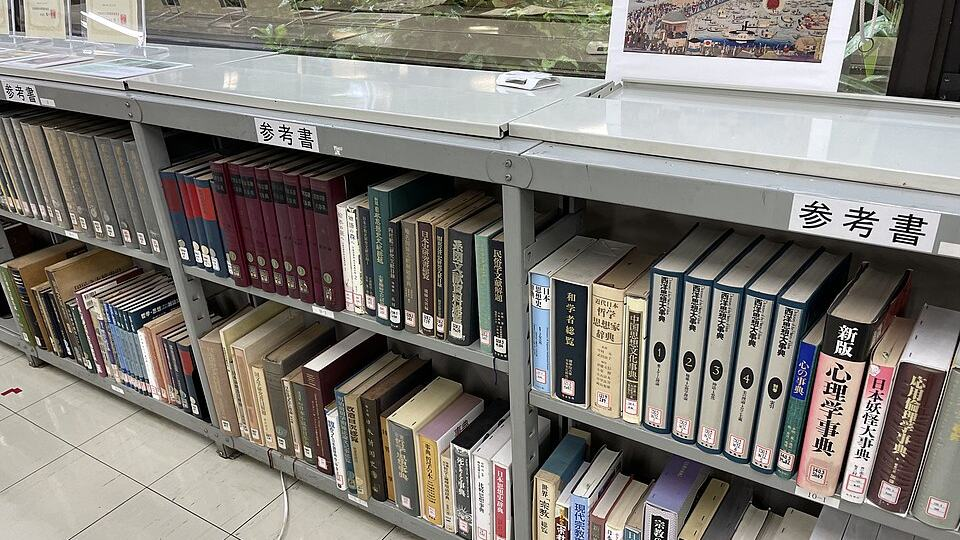

8. Alanya Kitap Fuarı açıldı: tarihler, mekân ve konuk yazarlar

Görsel: Reference books in Sanko Library 1 · Eugene Ormandy · CC BY-SA 4.0 · Wikimedia Commons
Alanya Belediyesi'nin düzenlediği kitap fuarının sekizincisi okurlara açıldı. Fuarın teması "800 Yıllık Mirasın Gölgesinde" olarak duyuruldu ve ilçenin tarihi mirasına gönderme yapıyor. On gün boyunca söyleşiler, paneller ve imza etkinlikleri yapılıyor; program 4 Ekim 2026'da sona eriyor. Girişle ilgili bilgi kaynaklara göre değişiyor.
8. Alanya Kitap Fuarı nerede kuruldu, ne oldu?
Fuar, eski belediye binasının arkasında hazırlanan alanda kuruldu. Akdeniz Gerçek ve Son Alanya, açılış töreninin saat 19.30'da yapıldığını yazıyor. Törene belediye başkan vekili, protokol üyeleri ve İlçe Milli Eğitim Müdürü katıldı.
Alanda farklı yayınevlerinin stantları yer alıyor; okurlar edebiyattan tarihe uzanan türlerde binlerce kitaba bakabiliyor. Belediye Başkan Danışmanı Faruk Konukçu açılışta kitabın toplumsal yaşamdaki dönüştürücü rolüne değindi.
Program yalnız satışla sınırlı değil. Açılış gününün söyleşisini araştırmacı-yazar ve emekli öğretmen Haşim Yetkin "Geçmişten Günümüze Alanya" başlığıyla verdi.
Yeni Birlik, on gün boyunca panellerin, imza günlerinin ve yazar söyleşilerinin sürdüğünü yazıyor. Aynı habere göre programda akademisyenler ve şairler de yer alıyor; okurlar kitapları uygun koşullarla edinebiliyor.
Alanya Kitap Fuarı neden bu kadar arandı?
İlgiyi büyüten ilk neden konuk listesi. Yeni Alanya'nın yayımladığı programda Gani Müjde, Haydar Ergülen, Prof. Dr. Tufan Gündüz, Hanefi Avcı, Abdullah Ataşçı, Nurullah Genç, Engin Alan, Dr. Ramazan Kurtoğlu ve Ahmet Ümit yer alıyor.
Aynı programda Burcu Bahar, Işıl Işık ve Haşim Yetkin de bulunuyor. Ahmet Ümit'in 4 Ekim akşamı kapanış konuşmacısı olması aramaların son günlere yoğunlaşmasında etkili oldu.
İkinci neden okul katılımı. Akdeniz Gerçek ve Son Alanya, kırsal bölgelerden yaklaşık 2 bin çocuğun fuar alanına taşınacağını ve ihtiyaç sahibi çocuklara kitap hediye çeki verileceğini aktarıyor.
Üçüncü neden saat bilgisi arayışı. Yeni Alanya'nın programında söyleşiler çoğunlukla 20.00'de başlıyor; Işıl Işık 16.00'da, Burcu Bahar ise sabah 10.00'da okurlarla buluştu. Engin Alan için 19.00-22.00 aralığı duyuruldu.
Alanya Kitap Fuarı için bilinenler ve henüz bilinmeyenler
Bitiş tarihi tüm kaynaklarda aynı: 4 Ekim 2026. Başlangıçta ise ayrışma var. Yeni Alanya ve Yeni Birlik fuarı 25 Eylül başlangıçlı veriyor; Akdeniz Gerçek ile Son Alanya 26 Eylül diyor. Dördü de süreyi on gün olarak yazıyor.
Katılımcı yayınevi sayısı henüz açıklanmadı. Haberlerde yalnızca "farklı yayınevlerinin stantları" ifadesi geçiyor, sayı verilmiyor. Son Alanya, fuar kapsamında kütüphane ziyareti olanağının da bulunduğunu belirtiyor.
Girişin ücretli olup olmadığı da kaynaklarda net değil. Yeni Alanya girişin ücretsiz olduğunu belirtiyor; diğer haberlerde bu konuda bir bilgi yok. Günlük açılış-kapanış saatleri de duyurulmadı; yalnızca etkinliklerin saatleri paylaşıldı.
Alanya Kitap Fuarı'nda sırada ne var?
Son günlerin programı yoğun: 2 Ekim'de Nurullah Genç, 3 Ekim'de Engin Alan ve Dr. Ramazan Kurtoğlu, 4 Ekim'de Ahmet Ümit okurlarla buluşuyor. Bu üç günün söyleşileri de akşam saatlerine konuldu.
Fuarın toplam ziyaretçi sayısı ve satış verileri kapanıştan önce paylaşılmadı. Dokuzuncu Alanya Kitap Fuarı'nın tarihi ve teması da henüz açıklanmadı.
Takip etmek için
- Fuar alanı: eski Alanya Belediyesi binasının arkasındaki etkinlik alanı; söyleşiler genelde akşam 20.00'de başlıyor.
- alanya.bel.tr üzerindeki haber bölümü: günlük program ve yazar saatleri buradan duyuruluyor.
- 4 Ekim 2026 akşamı yapılacak kapanış programı; dokuzuncu fuarın takvimi bu tarihten sonra netleşebilir.
Sık sorulan sorular
8. Alanya Kitap Fuarı hangi tarihlerde?
Fuar 4 Ekim 2026'da kapanıyor ve on gün sürüyor. Başlangıç için Yeni Alanya ile Yeni Birlik 25 Eylül, Akdeniz Gerçek ile Son Alanya 26 Eylül tarihini veriyor.
Alanya Kitap Fuarı'na giriş ücretsiz mi?
Yeni Alanya girişin ücretsiz olduğunu yazıyor. Diğer kaynaklarda bilet ya da giriş ücreti konusunda bir açıklama bulunmuyor.
Fuara kaç yayınevi katılıyor?
Katılımcı yayınevi sayısı henüz açıklanmadı. Haberlerde yalnızca farklı yayınevlerinin stant açtığı belirtiliyor.
Olgular şu yayıncıların haberlerinden derlendi: Yeni Alanya, Akdeniz Gerçek, Yeni Birlik, Son Alanya. Metnin tamamı TrendSaphiens tarafından yazıldı; kaynaklarla kelime örtüşmesi %0.0 (eşik %5). Kaynaklarda olmayan bilgi eklenmedi.